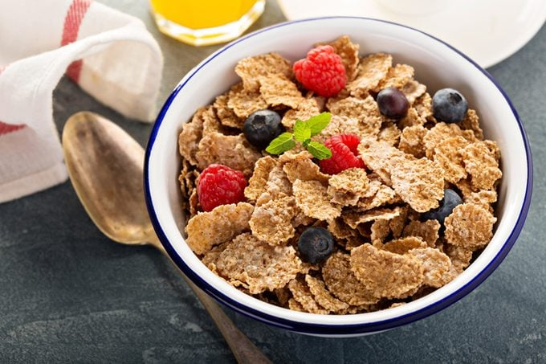

Cereal

Description:
This a recipe for making cereal. Nothing groundbreaking, just simple and concise;
and perhaps a tip or two for more variety.
Ingredients:
- A bowl and spoon
- Your favorite cereal
- Milk
- Fruits (Optional)
Steps:
- Pour your favorite cereal brand into an empty bowl.
Don't pour too much!
If you like, you can add some fruits, too!
Banana slices and berries work best here.
- Pour milk into bowl
- Eat cold right away or microwave. Enjoy!